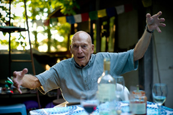
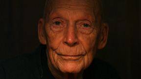

 If you define an artist as one who doesn’t just “make art” but is someone who has an insatiable curiosity toward the world, whose vision is strong but ever evolving and who lives their art everyday, then you are describing Leslie Laskey.
Painter, sculptor, photographer, poet, teacher, mentor, cook, friend Leslie approaches all such roles with the mindfulness of a true artist taking nothing for granted, challenging himself and others, making every experience an opportunity to both learn and teach.
One might imagine this approach was set in motion when at the age of seventeen, he participated in Orson Welles’ War of the Worlds radio broadcast. Or perhaps it was distilled in 1944, when as a soldier of the Second World War he stormed the beaches of Normandy. It was certainly refined at the Institute of Design where he studied under American Bauhaus pioneer, László Moholy-Nagy.
For 35 years at Washington University’s School of Architecture, Professor Laskey influenced thousands of first and second year design students. Sometimes in profound and life changing ways. But he was always open to study and learning from others and encouraged the collaboration of ideas. He found a kinship and spiritual father in Shikō Munakata, the internationally acclaimed Japanese woodblock artist.
 His legacy is firmly rooted and continues to grow. In 1987, he was named Professor Emeritus and in 2006, a group of former students founded Studio L, an organization that sponsors the “Laskey Award,” a design competition, whose mission is to honor Professor Laskey’s teaching ethic as well as foster a living, evolving community of artists, friends, patrons and students of Leslie.
Neither retirement nor age have affected Laskey’s modus operandi. He continues to teach “Art Kamp” and his output of “art,” whether it be the presentation of a uniquely “Laskey” meal or a major gallery opening, is still his life.
Leslie continues to work, live, love and inspire, sharing his life with his partner of over fifty years, sculptor and architect Frank Schwaiger. He divides his time between St Louis and Manistee, Michigan.
“I don't think my art is different from my life; they're intertwined, inseparable. The way I cook, the way I paint, the way I read, and the music I listen to are all one in the same.”
–Leslie, from the article ‘The Art of Life, a Life in Art’, originally published in the St. Louis Beacon.